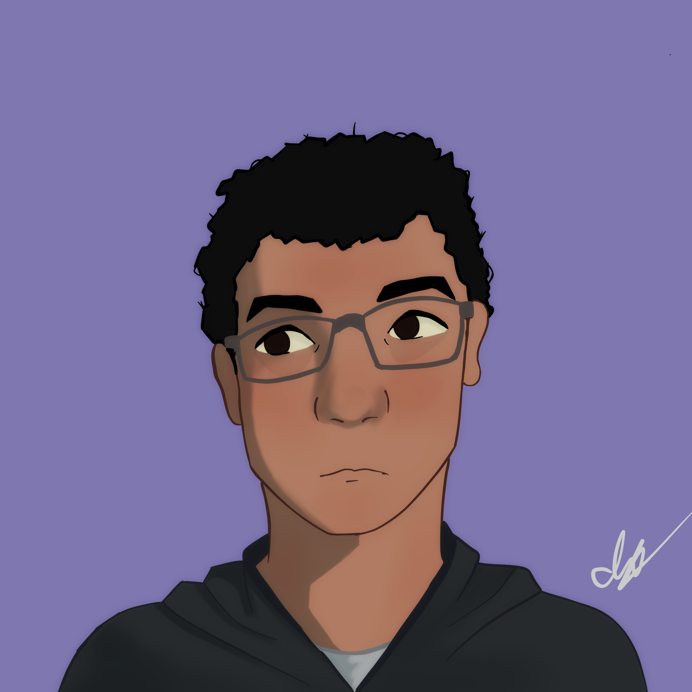
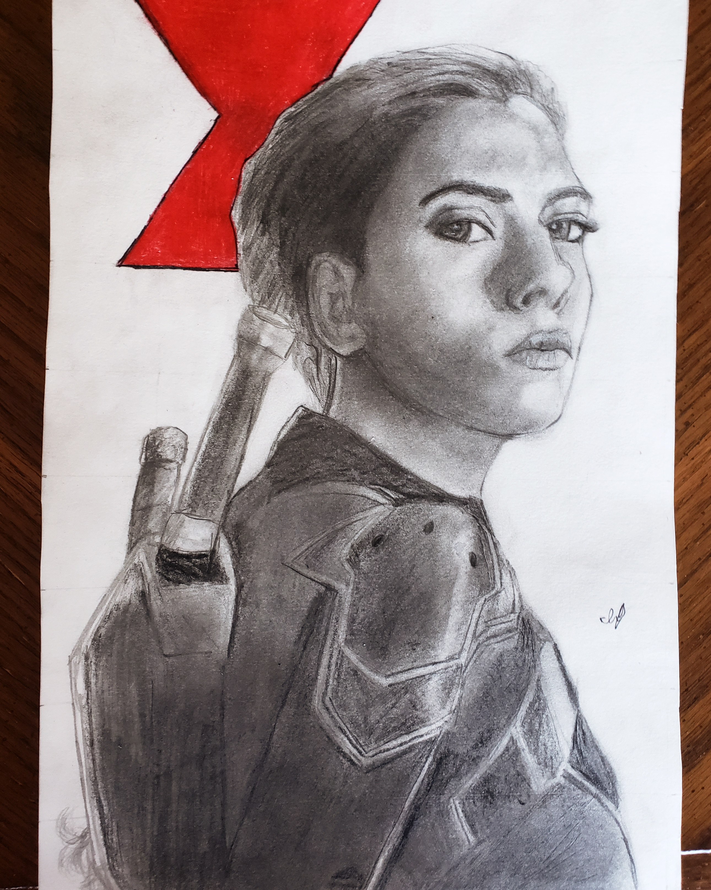

Isaiah Vallecillo is a first-year student in the Multimedia Program at the Lethbridge College and is focused on graphic design. He has a strong interest in illustration as well. He enjoys watching animated television shows, movies, and video games, and they inspire a lot of aspects of his drawing style. Isaiah also enjoys listening to music as it can help him get ideas for artistic pieces or for designs. He sketches and creates digital art, and he uses this interest to strengthen his sense of design, and in turn, his experience with design helps him with his illustrations.
In high school, he got a Coyote Character Award in grade 11 for Digital Media. He also received an award for academic excellence for grade 12 and was on the honor roll. His favorite classes in high school were Art, Biology and Science. Many friends have commissioned him for illustrations because they take an interest in his artistic style and the pieces he creates at his skill level. This is one of the reasons Isaiah is in the Multimedia Program, as he wishes to expand his skills and knowledge in multiple areas of multimedia.

During his free time, Isaiah enjoys playing basketball, playing video games, and drawing. He has been playing the piano since he was younger and plays the guitar as well. He enjoys listening to all types of music, although his favorite musicians include Shawn Mendes, Bee Gees, Michael Jackson, and the Ramones. Since Isaiah is bilingual and speaks Spanish, he enjoys listening to Hispanic music. Korean pop music is another genre Isaiah has been taking an interest in. This is one of the reasons why Isaiah is determined to travel and visit an Asian country such as Korea. The culture really appeals to him and he hopes to create a unique experience in his travels that could even inspire him in his designs and illustrations.
Isaiah started taking an interest in drawing from a young age but began practicing much more around grade 5. Since then, he has continued learning, practicing, and experimenting with different techniques and artistic mediums. His biggest inspirations for his art are seeing both live-action and animated Disney and Pixar movies. Some of his biggest inspirations are Big Hero 6, Tron: Legacy, and Tangled. These films led him to search for the concept art used in the creation of these media and have been a big inspiration since.